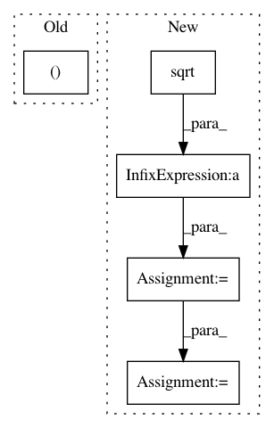

de2884af79ecb8242226466b1f5c82409c8e72cf,keras/layers/core.py,Merge,get_output,#Merge#Any#,401
Before Change
import theano
l1 = self.layers[0].get_output(train)
l2 = self.layers[1].get_output(train)
output, _ = theano.scan(lambda v1, v2: K.dot(v1, v2) / K.sqrt(K.dot(v1, v1) * K.dot(v2, v2)),
sequences=[l1, l2],
outputs_info=None)
return output
After Change
import theano
l1 = self.layers[0].get_output(train)
l2 = self.layers[1].get_output(train)
output = T.batched_tensordot(l1, l2, self.dot_axes) / T.sqrt(T.batched_tensordot(l1, l1, self.dot_axes) * T.batched_tensordot(l2, l2, self.dot_axes))
output = output.dimshuffle((0, "x"))
return output
else:
raise Exception("Unknown merge mode")
In pattern: SUPERPATTERN
Frequency: 3
Non-data size: 5
Instances
Project Name: keras-team/keras
Commit Name: de2884af79ecb8242226466b1f5c82409c8e72cf
Time: 2015-12-08
Author: farizrahman4u@gmail.com
File Name: keras/layers/core.py
Class Name: Merge
Method Name: get_output
Project Name: OpenNMT/OpenNMT-py
Commit Name: 3bc7e38ed98f3b7a13fcee2726ec38b27e5c4e1b
Time: 2017-06-23
Author: srush@sum1gpu02.rc.fas.harvard.edu
File Name: onmt/Models.py
Class Name: Encoder
Method Name: _embed
Project Name: chainer/chainercv
Commit Name: 222213890a758b3efc8ed8ff57133291753f98e0
Time: 2017-09-28
Author: yuyuniitani@gmail.com
File Name: chainercv/transforms/image/random_sized_crop.py
Class Name:
Method Name: random_sized_crop